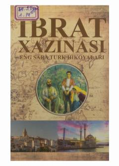

ESTurk yozuvchilarining milliy-ozodlik davri ruhidagi sara hikoyalari to'plami.
Ushbu to'plamda turk yozuvchilarining 1919-1922 yillardagi milliy-ozodlik harakati davrida yozilgan sara hikoyalari jamlangan. Asarlarda turk xalqining qahramonligi, vatanparvarlik tuyg'ulari va o'sha davrning ijtimoiy hayoti realistik tarzda tasvirlangan.